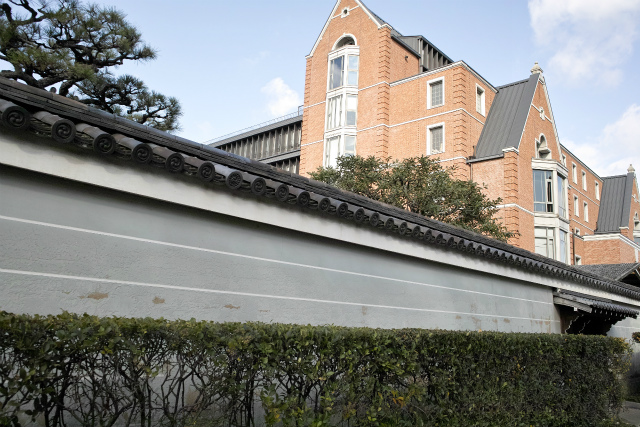
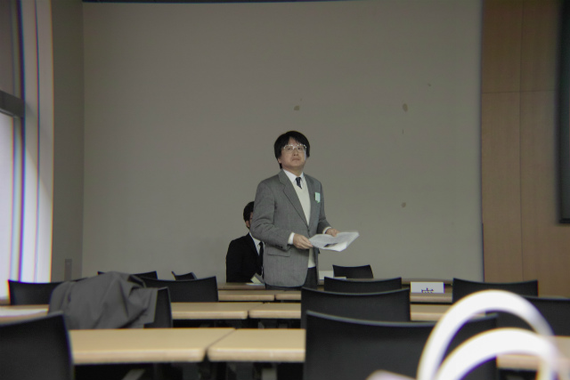
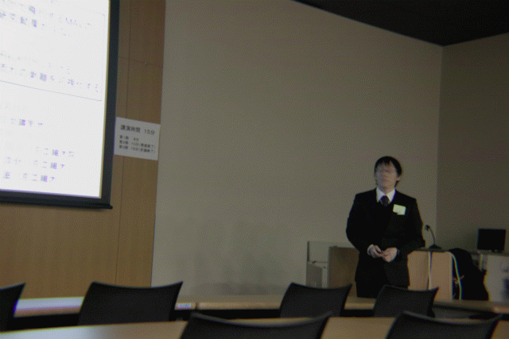
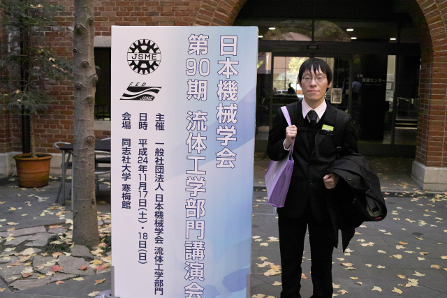
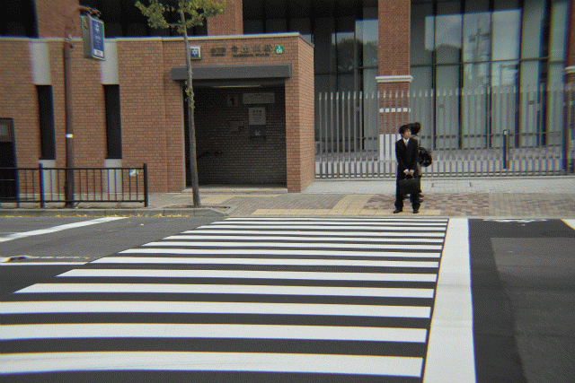
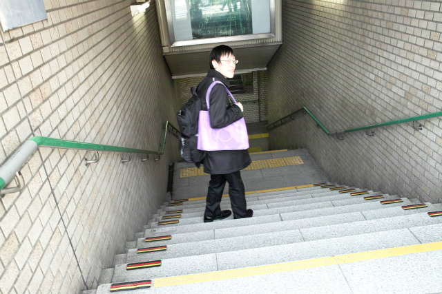
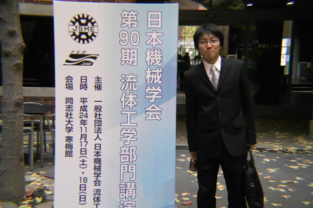
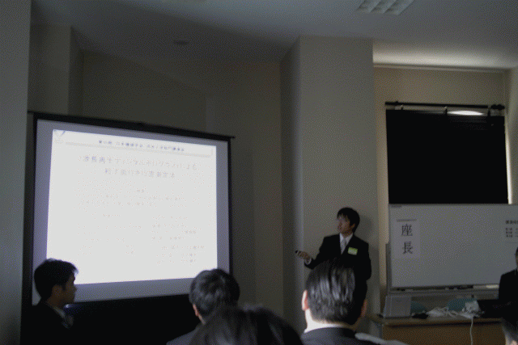
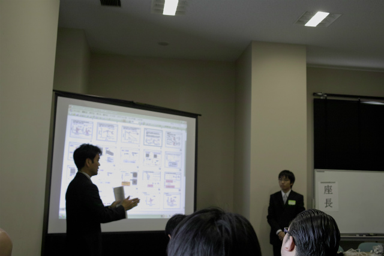
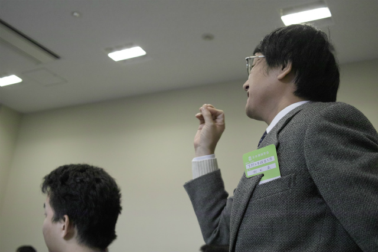

| ・第90期 日本機械学会流体工学部門 講演会 in 同志社大学(H24.11.17-18) | |||
|
前回から3年ぶりに参加です。M1のK井くんとM2のH野くんが発表で、村田先生は座長です。 |
|||
|

私立っぽい建屋 |

質問ないですか？ | ||
|

まずはH野くん |

質問や指摘事項に納得 | ||
|

レーザーポインタ受け取りますー |

帰って実験の準備をします | ||
|

なんかまだ余裕ありますね |

説明中 | ||
|

質疑の時間 |

村田先生のフォロー（ウチは基本しない） | ||